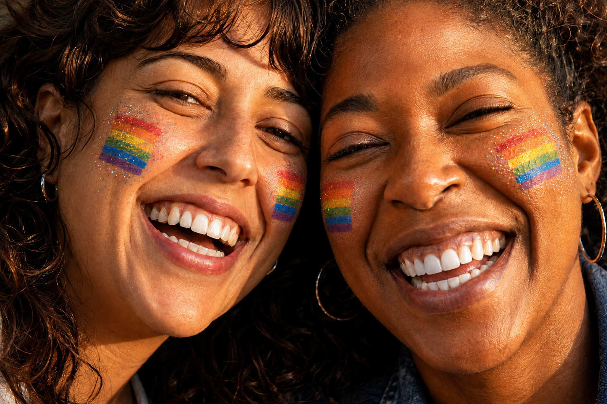

Seksualiteit, gender en geslacht.
Niet hetzelfde, wel alle drie onderdeel van wie iemand is. Seksualiteit, gender en geslacht zijn termen die nogal vaak met elkaar verward worden. Hieronder vind je een helder overzicht.
Meer weten? Kijk op www.transgenderinfopunt.be
Seksualiteit
Seksualiteit gaat over tot wie iemand zich aangetrokken voelt. Het gaat om romantische en seksuele aantrekkingskracht, en die kan variëren van persoon tot persoon.
Het zegt iets over wie iemand aantrekkelijk vindt, maar niet automatisch over wie iemand is in zijn of haar gender of geslacht.

Geslacht
In de wetenschap verwijst geslacht vaak naar biologische kenmerken die een lichaam beschrijven, zoals chromosomen, gonaden, hormonen en de anatomie van de geslachtsorganen.
Van oudsher wordt dit vaak in termen als man en vrouw benoemd, maar dat is niet altijd eenduidig. Intersex betekent dat iemand kenmerken heeft die niet volledig binnen een eenvoudige tweedeling passen.
Gender
Genderidentiteit is iemands innerlijke en individuele ervaring van gender. De term verwijst naar het innerlijke gevoel zich man, vrouw, (afwisselend) beiden, of geen van beiden te voelen.
Cisgender betekent dat de genderidentiteit grotendeels overeenkomt met het toegewezen geboortegeslacht. Transgender betekent dat de genderidentiteit en het toegewezen geboortegeslacht niet of niet volledig met elkaar overeenkomen.
LGBTQI+
Amixa is een LGBTQI+-vriendelijke plek
Amixa neemt een positie in die respect, inclusie en veiligheid ondersteunt voor mensen met verschillende seksuele geaardheden, genderidentiteiten en genderexpressies. Dat betekent niet dat iemand volledig wordt bepaald door deze aspecten. Integendeel: de focus ligt op de mens als geheel, op vertrouwen, respect en echte verbinding.
In de praktijk betekent dat dat mensen welkom zijn zonder dat ze hoeven te verbergen wie ze zijn. Een veilige omgeving betekent ruimte voor verschil, zonder reductie van de mens tot één kenmerk.
- Gender en geslacht zijn niet hetzelfde.
- Je kan je genderidentiteit niet vrij kiezen.
- Iemand kiest er niet voor om transgender te zijn.
- Net zoals je niet kunt kiezen om cisgender te zijn, geldt hetzelfde voor transgender personen.
- Transgender personen kunnen wensen dat ze cisgender waren, maar dat kunnen zij niet zelf kiezen.
Geslacht is niet hetzelfde als gender.
Geslacht
Het geslacht wordt bij de geboorte bepaald en vastgelegd op de geboorteakte. Het is vaak enkel gebaseerd op wat artsen visueel waarnemen. Geslacht verwijst vaak naar biologisch bepaalde kenmerken, zoals anatomie, hormonen, chromosomen of voortplantingskenmerken.
Het is belangrijk om te weten dat niet iedereen past in een strikt onderscheid tussen “man” en “vrouw”. Sommige mensen worden als intersex geboren, wat betekent dat hun lichaam niet volledig past in een eenvoudige tweedeling.
Gender
Gender verwijst naar iemands genderidentiteit, genderexpressie en de sociale betekenis die aan gender wordt gegeven. Het gaat over hoe iemand zichzelf voelt, benoemt en uitdrukt: vrouw, man, non-binair, genderfluïde of iets anders.
Gender is dus geen automatische afspiegeling van biologisch geslacht. Het is een persoonlijke, sociale en psychologische dimensie van identiteit die bij verschillende mensen anders kan zijn.
Wat betekenen deze termen?
Cisgender
Iemand is cisgender als iemands genderidentiteit overeenkomt met het geslacht dat bij de geboorte als vrouw of man is vastgesteld. Bijvoorbeeld: iemand die als meisje geboren is en zich ook als vrouw voelt.
Transgender
Iemand is transgender als iemands genderidentiteit niet overeenkomt met het geslacht dat bij de geboorte als vrouw of man is vastgesteld. Bijvoorbeeld: iemand die als jongen geboren is en zich als vrouw voelt, of iemand die niet past in de traditionele binaire indeling.
Wat is het verschil?
Gender verwijst naar de cultuur-, sociale en persoonlijke ervaring van man, vrouw, non-binair, genderfluïde of andere genderidentiteiten. Seksualiteit verwijst naar wie iemand aantrekt, liefheeft of romantisch mee verbonden is. Deze zaken kunnen samenkomen in het leven van een persoon, maar ze zijn niet per se hetzelfde en moeten niet op elkaar worden teruggebracht.
Een persoon is meer dan een enkel label. De visie van Amixa is dat iedereen in de eerste plaats een mens is: met een unieke identiteit, verhaal, energie en ruimte voor eigen groei. Volgens deze visie is een persoon niet te definiëren door zijn of haar seksualiteit of gender alleen.
Een korte, duidelijke vraag
Kan iemand gender kiezen?
Niet op de manier van een vrije keuze. Gender is een diep persoonlijk gevoel van wie iemand is. Voor veel mensen is het geen “label” dat ze zomaar opzetten, maar iets dat ze in zichzelf herkennen, voelen en soms in de loop van hun leven beter kunnen begrijpen. Het kan zijn als vrouw, man, non-binair of genderfluïde. Sommige mensen weten dit vroeg, anderen later.
Kan iemand geslacht kiezen?
Nee. Geslacht is vaak een biologisch en medisch begrip dat verwijst naar kenmerken zoals chromosomen, hormonen en anatomie. Het wordt vaak bij de geboorte vastgesteld, maar het is niet hetzelfde als gender. Bij personen die intersex zijn, kunnen er variaties voorkomen die niet eenvoudig in een traditionele tweedeling passen. Gender en geslacht kunnen overeenkomen, maar hoeven dat niet te doen.
Wel kan iemand later beslissingen nemen over medische zorg en lichaamsveranderingen, zoals hormoonbehandeling of operaties. Dat is een keuze over medische behandeling en het lichaam, niet een keuze over de eigen genderidentiteit.
Wetenschappelijk inzicht
- Transgender Infopunt. “Genderidentiteit” en “Geslacht”. https://www.transgenderinfo.be/nl/identiteit/concepten/genderidentiteit
- Transgender Infopunt. “Woordenlijst: cisgender, gender, geslacht, trans(gender)”. https://www.transgenderinfo.be/nl/identiteit/concepten/woordenlijst
- American Psychological Association. Guidelines for Psychological Practice with Transgender and Gender Nonconforming People, 2015.
- World Health Organization. International Classification of Diseases (ICD-11), 2019/2022.
- National Academies of Sciences, Engineering, and Medicine. Understanding the Well-Being of LGBTQI+ Populations, 2020.
- Cahill, S. et al. Sexual and gender minority health. Annual Review of Public Health, 2017.
- Institute of Medicine. The Health of Lesbian, Gay, Bisexual, and Transgender People, 2011.